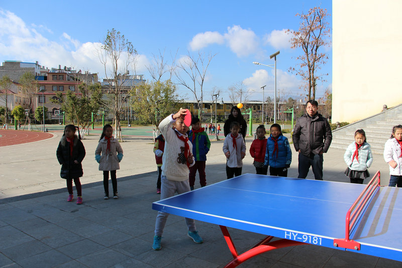

樱花语校区班级乒乓球决赛
第二党支部 | 5/8 11:29

薛华老师，2001年加入中国共产党，至今已有15年党龄，在15之上加个8，便是教龄。不知不觉，岁月的长春藤已悄悄蔓过她的脸庞、身体，病痛也时不时地来敲下门。可是，生命中有不在承受之轻，便也有勇于承受之重。无论是肩膀脱臼，还是血压飙升，她从没有因来自自身的原因而请过假。问她原因，淡淡一笑：都很辛苦，不要再给大家添累了。“薛老师，你不在，地球依然在转动啊！”我们轻轻叹息，心里却是满满的敬重与感动。
作老师的，也许有时就是这么“愚钝”，总是把“天下为公”的理念担在自己肩头；然而作老师的，也总是这么执着，看过一朵花开了，便期待在整个花园的怒放。所以，薛老师说：“我喜欢守候花开。我始终相信，迟开的花蕊只是为了蓄能储量，一旦绽放，定是更为灿烂。所以，我要做的，就是用心守候，耐心等待。”
说对了！娜娜——薛老师的一个较为特殊的小女孩，学习上怎么努力都达不到基本要求，渐渐，开始出现厌学情绪。薛老师不断鼓励她，鼓励家长，也发现任课老师对她更加关心，但收效甚微。毕竟，学生以学为主，学习不理想，谁能不急？
薛老师也急了，她急的是，怎么大家都急了呢？她始终坚信，娜娜这朵小花一定有绽放的一天。
通过观察，薛老师发现娜娜在演艺方面有天赋，便鼓励她去报兴趣班，扬长避短。果然，娜娜的艺术天赋得以舒展。自信心的增加带来了学习的变化，娜娜顺利小学毕业了。
一天，上初中的娜娜给薛老师发了一条微信，告诉老师她在中学过得很快乐，尤其是，数学成绩变成了“优秀”。薛老师很欣慰，她更加坚信，迟开的花苞更灿烂，只是更需要用心守候，耐心等待。